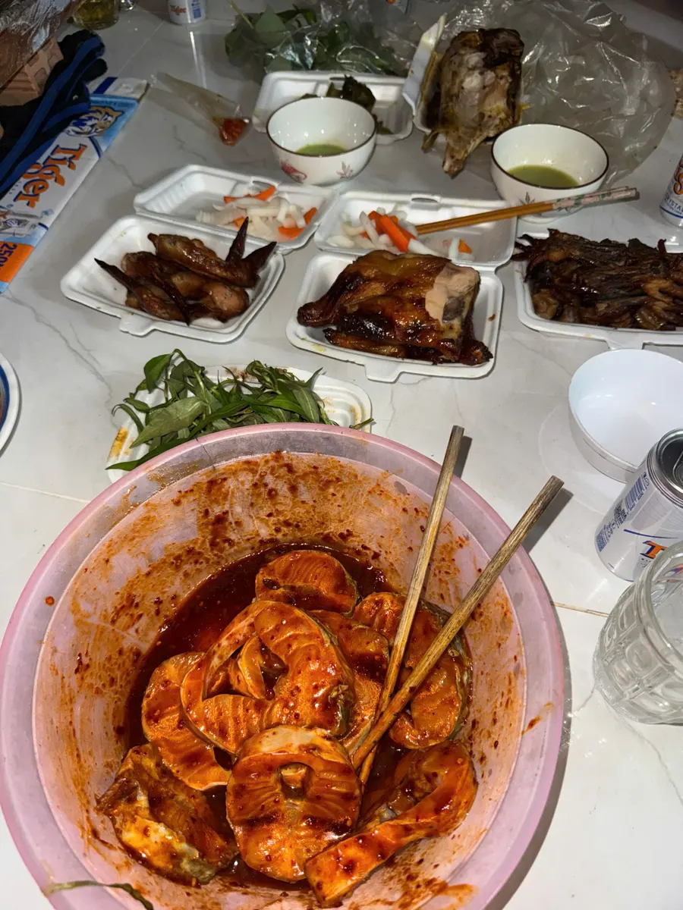
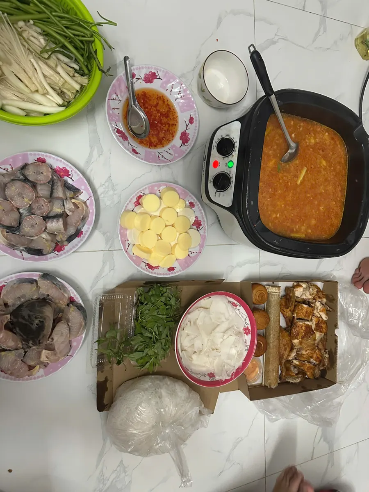

Chọn cá kỹ
Cá tầm được chọn lựa từ đầu, bắt đầu hành trình sơ chế khi còn sống.
Hải Sản Mỹ Chi chuyên cá tầm sơ chế sạch sẽ, chia phần gọn gàng. Chọn món bên dưới rồi nhắn Zalo, bên mình báo giá và giao tận nơi.
Giá có thể thay đổi theo ngày. Bấm “Hỏi giá qua Zalo” để được báo giá và tư vấn cách chọn phần phù hợp.
Chất lượng không chỉ nằm ở bao bì đẹp. Quan trọng là cá được chọn thế nào và được xử lý đúng lúc.
Cá tầm được chọn lựa từ đầu, bắt đầu hành trình sơ chế khi còn sống.
Làm sạch, chia phần vừa ăn để gia đình dùng tiện và đỡ tốn công.
Sau sơ chế, cá được bảo quản lạnh để giữ chất lượng đến khi đến tay bạn.
“Chúng tôi chăm chút từ lúc chọn cá, để bữa ăn của bạn thêm an tâm và trọn vị.”— Hải Sản Mỹ Chi
Vài đoạn video quay thực tế. Bấm vào video để xem.
Sáu cách chế biến đơn giản cho bữa cơm gia đình. Bấm vào từng món để xem nguyên liệu và cách làm.


Các video trên là của những kênh YouTube khác, chỉ để tham khảo cách chế biến. Hải Sản Mỹ Chi không sở hữu các video này.
Nhắn tên món và số lượng, bên mình phản hồi trong giờ mở cửa.